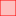

<!doctype html>
<html lang="en">
    <head>
        <meta charset="utf-8">
        <meta http-equiv="X-UA-Compatible" content="IE=edge">
        <meta name="viewport" content="initial-scale=1,user-scalable=no,maximum-scale=1,width=device-width">
        <meta name="mobile-web-app-capable" content="yes">
        <meta name="apple-mobile-web-app-capable" content="yes">
        <link rel="stylesheet" href="css/leaflet.css">
        <link rel="stylesheet" href="css/qgis2web.css"><link rel="stylesheet" href="css/fontawesome-all.min.css">
        <style>
        html, body, #map {
            width: 100%;
            height: 100%;
            padding: 0;
            margin: 0;
        }
        </style>
        <title>Incendiary Kites Burn Scars</title>
    </head>
    <body>
        <div id="map">
        </div>
        <script src="js/qgis2web_expressions.js"></script>
        <script src="js/leaflet.js"></script>
        <script src="js/leaflet.rotatedMarker.js"></script>
        <script src="js/leaflet.pattern.js"></script>
        <script src="js/leaflet-hash.js"></script>
        <script src="js/Autolinker.min.js"></script>
        <script src="js/rbush.min.js"></script>
        <script src="js/labelgun.min.js"></script>
        <script src="js/labels.js"></script>
        <script src="data/KKLMap20181018_0.js"></script>
        <script src="data/BurnScars1_1.js"></script>
        <script>
        var highlightLayer;
        function highlightFeature(e) {
            highlightLayer = e.target;

            if (e.target.feature.geometry.type === 'LineString') {
              highlightLayer.setStyle({
                color: '#ffff00',
              });
            } else {
              highlightLayer.setStyle({
                fillColor: '#ffff00',
                fillOpacity: 1
              });
            }
        }
        var map = L.map('map', {
            zoomControl:true, maxZoom:28, minZoom:1
        }).fitBounds([[31.251443217051545,34.233599223659155],[31.644000923410612,34.98048250671228]]);
        var hash = new L.Hash(map);
        map.attributionControl.addAttribution('<a href="https://github.com/tomchadwin/qgis2web" target="_blank">qgis2web</a>');
        var bounds_group = new L.featureGroup([]);
        function setBounds() {
        }
        function pop_KKLMap20181018_0(feature, layer) {
            layer.on({
                mouseout: function(e) {
                    for (i in e.target._eventParents) {
                        e.target._eventParents[i].resetStyle(e.target);
                    }
                },
                mouseover: highlightFeature,
            });
            var popupContent = '<table>\
                    <tr>\
                        <th scope="row">FireDate</th>\
                        <td>' + (feature.properties['FireDate'] !== null ? Autolinker.link(String(feature.properties['FireDate'])) : '') + '</td>\
                    </tr>\
                    <tr>\
                        <th scope="row">MappingDate</th>\
                        <td>' + (feature.properties['MappingDate'] !== null ? Autolinker.link(String(feature.properties['MappingDate'])) : '') + '</td>\
                    </tr>\
                    <tr>\
                        <th scope="row">Comments</th>\
                        <td>' + (feature.properties['Comments'] !== null ? Autolinker.link(String(feature.properties['Comments'])) : '') + '</td>\
                    </tr>\
                    <tr>\
                        <th scope="row">AreaDunam</th>\
                        <td>' + (feature.properties['AreaDunam'] !== null ? Autolinker.link(String(feature.properties['AreaDunam'])) : '') + '</td>\
                    </tr>\
                </table>';
            layer.bindPopup(popupContent, {maxHeight: 400});
        }

        function style_KKLMap20181018_0_0() {
            return {
                pane: 'pane_KKLMap20181018_0',
                opacity: 1,
                color: 'rgba(35,35,35,1.0)',
                dashArray: '',
                lineCap: 'butt',
                lineJoin: 'miter',
                weight: 1.0, 
                fill: true,
                fillOpacity: 1,
                fillColor: 'rgba(114,155,111,1.0)',
            }
        }
        map.createPane('pane_KKLMap20181018_0');
        map.getPane('pane_KKLMap20181018_0').style.zIndex = 400;
        map.getPane('pane_KKLMap20181018_0').style['mix-blend-mode'] = 'normal';
        var layer_KKLMap20181018_0 = new L.geoJson(json_KKLMap20181018_0, {
            attribution: '',
            pane: 'pane_KKLMap20181018_0',
            onEachFeature: pop_KKLMap20181018_0,
            style: style_KKLMap20181018_0_0,
        });
        bounds_group.addLayer(layer_KKLMap20181018_0);
        map.addLayer(layer_KKLMap20181018_0);
        function pop_BurnScars1_1(feature, layer) {
            layer.on({
                mouseout: function(e) {
                    for (i in e.target._eventParents) {
                        e.target._eventParents[i].resetStyle(e.target);
                    }
                },
                mouseover: highlightFeature,
            });
            var popupContent = '<table>\
                    <tr>\
                        <th scope="row">Imagery Date</th>\
                        <td>' + (feature.properties['Imagery Date'] !== null ? Autolinker.link(String(feature.properties['Imagery Date'])) : '') + '</td>\
                    </tr>\
                    <tr>\
                        <th scope="row">Area (sq. meters)</th>\
                        <td>' + (feature.properties['Area (sq. meters)'] !== null ? Autolinker.link(String(feature.properties['Area (sq. meters)'])) : '') + '</td>\
                    </tr>\
                    <tr>\
                        <th scope="row">Landcover</th>\
                        <td>' + (feature.properties['Landcover'] !== null ? Autolinker.link(String(feature.properties['Landcover'])) : '') + '</td>\
                    </tr>\
                    <tr>\
                        <th scope="row">Distance</th>\
                        <td>' + (feature.properties['Distance'] !== null ? Autolinker.link(String(feature.properties['Distance'])) : '') + '</td>\
                    </tr>\
                </table>';
            layer.bindPopup(popupContent, {maxHeight: 400});
        }

        function style_BurnScars1_1_0() {
            return {
                pane: 'pane_BurnScars1_1',
                opacity: 1,
                color: 'rgba(255,0,0,1.0)',
                dashArray: '',
                lineCap: 'butt',
                lineJoin: 'miter',
                weight: 1.0, 
                fill: true,
                fillOpacity: 1,
                fillColor: 'rgba(251,0,1,0.25098039215686274)',
            }
        }
        map.createPane('pane_BurnScars1_1');
        map.getPane('pane_BurnScars1_1').style.zIndex = 401;
        map.getPane('pane_BurnScars1_1').style['mix-blend-mode'] = 'normal';
        var layer_BurnScars1_1 = new L.geoJson(json_BurnScars1_1, {
            attribution: '',
            pane: 'pane_BurnScars1_1',
            onEachFeature: pop_BurnScars1_1,
            style: style_BurnScars1_1_0,
        });
        bounds_group.addLayer(layer_BurnScars1_1);
        map.addLayer(layer_BurnScars1_1);
        var title = new L.Control();
        title.onAdd = function (map) {
            this._div = L.DomUtil.create('div', 'info');
            this.update();
            return this._div;
        };
        title.update = function () {
            this._div.innerHTML = '<h2>Incendiary Kites Burn Scars</h2>';
        };
        title.addTo(map);
        var baseMaps = {};
        L.control.layers(baseMaps,{' Burn Scars 1': layer_BurnScars1_1,' KKL Map 20181018': layer_KKLMap20181018_0,}).addTo(map);L.control.scale({position: 'bottomleft', maxWidth: 100, metric: true, imperial: false, updateWhenIdle: false}).addTo(map);
        setBounds();
        </script>
    </body>
</html>
